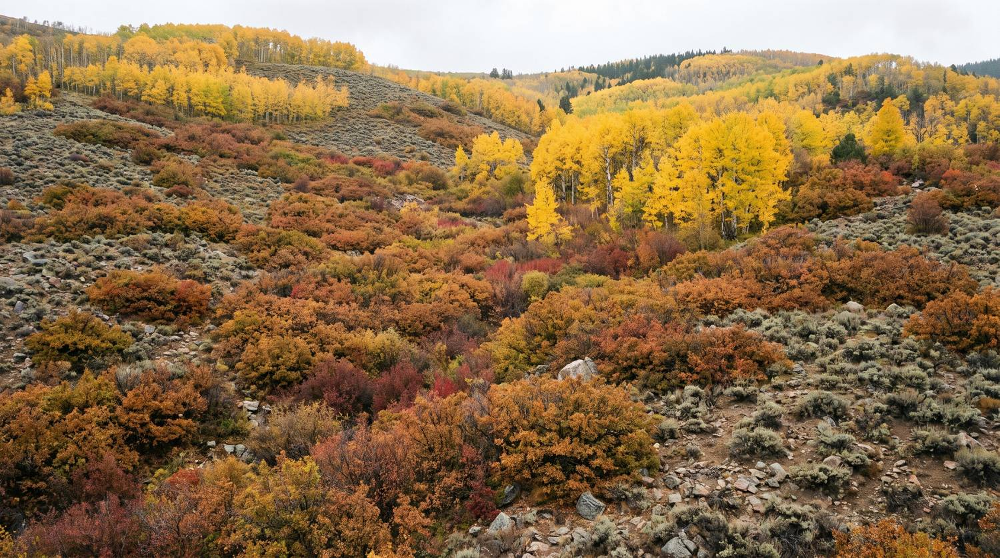

Three stages. The first one is the one almost nobody does, and it is why this can work.

Machine learning over satellite imagery, joined to normalised parcel records, scores candidate land on forest cover, soils, slope, aspect, water proximity and fire history, then returns who owns each parcel and how to reach them.
That matters because the mountains around Aspen are a patchwork: White River National Forest, Pitkin County Open Space, City of Aspen parcels, and private land. Each one has a different owner and a different permission path. Knowing which is which before anyone promises a location is the difference between a plan and a wish.
Colorado Parks and Wildlife already tracks the species that carry bears through autumn: Gambel oak, serviceberry, chokecherry, hawthorn and pinon pine. Colorado's largest black bear populations sit where Gambel oak and aspen meet open serviceberry and chokecherry. We put those species back, at scale, far from where people live.
Trash is involved in more than 57% of Colorado’s bear reports, and much of that is people who were never told the rules. Visitors arrive, leave a car unlocked with food in it, put a bin out the night before, and create a habituated bear that someone else has to deal with. Education is not the soft part of this work. It is the part with the fastest return.